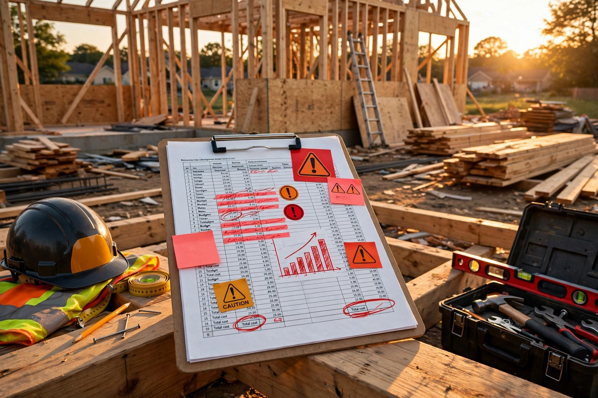

Seventy-Five Percent of Projects Blow Their Budget by Twenty-Seven Percent. The AI That Predicts Which Ones Has Never Seen a House.

I've watched a $520,000 custom home turn into a $607,000 problem over the course of one bad lumber delivery and two weeks waiting on an electrician who was framing another house across town. That was 2019, and the numbers have gotten worse since.
A survey Procore commissioned from IDC in May and June 2024 asked 505 owners and developers in the US and Canada a simple question: did you finish on budget? Seventy-five percent said no, and projects averaged twenty-seven percent over planned cost and sixty-nine days late. Six budget changes per project, and five schedule changes. Fifteen percent average cost increase just from changes alone. That data lives in a RENX summary of the Procore study.
Residential gets lumped into that average, and nobody breaks it out. Which tells you something about where the industry's attention sits.
The math that should scare a small builder
NAHB's Cost of Construction Survey, released January 2025, puts construction costs at 64.4 percent of the average new home price. That's a record high since they started tracking in 1998. Up from 60.8 percent in 2022, and finished lot is another 13.7 percent. Builder profit averaged 11.0 percent, and overhead and general expenses 5.7 percent.
Take the January 2026 average new home price Realtor.com cites from the latest NAHB regulatory study: $499,500. Construction cost at 64.4 percent is $321,678, and twenty-seven percent overrun on that construction cost is $86,853.
Builder margin at 11 percent is $54,945.
Overrun eats margin and leaves $31,908 in the red. Before you account for the $131,734 in regulatory costs NAHB now says makes up 26.4 percent of that same home, up nearly forty percent in five years.
I have seen three-person GC shops absorb a loss like that once. Never twice, and second one bankrupts them mid-project, which is when the homeowner learns what a mechanics lien really means.
Breakdown matters for diagnosis, and nAHB splits construction this way: interior finishes 24.1 percent, major system rough-ins 19.2 percent, framing 16.6 percent, exterior finishes 13.4 percent, foundations 10.5 percent, site work 7.6 percent, final steps 6.5 percent, other 2.1 percent. If your interior finishes are running under 20 percent or over 28 percent of construction, your budget is already telling you something is off. Most GCs don't track it that way, and they track by draw schedule.
What the models actually do
Academic side is ahead of job site, as usual. A paper presented at GCMM 2025 and archived in EPJ Conferences benchmarked four models for sector-specific cost overrun prediction. Random Forest Regressor hit R² 0.8001 overall and 0.8715 for residential and commercial domains, staying robust at 0.7990 even in complex industrial. It beat XGBoost, CatBoost, and a Multi-Layer Perceptron. Authors credit ensemble architecture reducing variance, handling mixed data types, modeling nonlinear interdependencies without the hyperparameter tuning headaches XGBoost and CatBoost demand. MLP lagged because construction datasets are small and inconsistently scaled, which is exactly what residential is.
That residential-specific number matters, and generic models trained across all typologies underperform. When you split out residential and commercial, you gain almost eight points of explanatory power. Nobody building residential prediction products cites this, because nobody is building residential prediction products.
Second thread: Systems Journal, volume 13, 2025, published an interpretable POA-LightGBM framework. Their literature review is useful even if you don't care about their optimizer. Al Mnaseer et al, and trained ANNs on 191 construction projects in Jordan and hit 92.19 percent accuracy and R² 0.9385 for cost and time overruns using Tabu Search optimization. Cheng et al, and built a hybrid Neural Network-BiGRU optimized with an Optical Microscope Algorithm and reported Reference Index 0.977 for costs, 0.932 for schedules. Elmasry and Elshaarawy fused CatBoost with Dwarf Mongoose, Phasor Particle Swarm, and Atom Search optimizers; ASO-CatBoost won. ForouzeshNejad et al, and ran XGBoost with Simulated Annealing and got 92 percent accuracy, cutting cost and time prediction errors by nearly 50 and 80 percent respectively versus Earned Value Management.
All impressive, and all trained on datasets that look nothing like a 1,800-square-foot custom home in Roseville where the county took 41 days to return a plan check and the lumber yard substituted SPF for Doug Fir without telling anyone.
Third thread is more practical, and buildings journal, November 2024, published a risk-based completion cost overrun ratio estimation method. Six classification algorithms, validated on 110 data points from a globally operating construction company. Goal: predict overrun ratio class based on changes in total risk score at any point during execution. Decision Tree classifier won, and not because decision trees are sexy. Because they are interpretable when a project manager asks why the model thinks this job is going red.
The insight is not the algorithm, and it is the framing. Instead of trying to predict final cost from day-zero estimates, track total risk score as it fluctuates and predict overrun class from that drift. That is how jobs actually go bad, and not all at once. By a thousand small shifts.
Why residential does not have this
Procore Insights exists, and it monitors budget performance, tracks RFI turnaround, reviews submittal status, analyzes site diaries to identify patterns, forecasts general conditions spending hourly, compares predicted spend against budget and historical data. It surfaces early indicators of overrun, and it is built for owners who manage portfolios of hospitals, universities, commercial towers.
A residential GC running two custom homes and a kitchen remodel does not pay $375 per user per month for portfolio analytics. He uses Buildertrend or JobTread or a spreadsheet his brother-in-law made in 2017. None of them ship a cost overrun classifier.
HBI and the University of Denver, with NAHB analysis, quantified one reason overruns are structural: skilled labor shortage impact $10.806 billion per year due to longer construction times, direct carrying costs $2.663 billion annually, 19,000 single-family homes not built in 2024 representing $8.143 billion in lost production. When your framer is also your trim carpenter because you cannot hire, your schedule risk is not a variable. It is a constant.
Input volatility makes it worse, and housingWire summarized BLS Producer Price Index via NAHB for May 2026: energy inputs to residential construction surged 17.2 percent month-over-month, 62.8 percent year-over-year. No, and 2 diesel up 105.9 percent year-over-year. Building materials up 0.7 percent month-over-month, 4.4 percent year-over-year. Softwood lumber up 5.6 percent year-over-year, ready-mix 1.7 percent, metal molding and trim 42.9 percent, gypsum down 1.1 percent. That diesel move alone erases margin on fixed-price contracts signed months earlier.
No public dataset captures all three: labor availability, material futures, and permit latency for US residential stick-frame. The 110-point dataset is one company, and the 191-point Jordan dataset is another country, another code, another labor market. Without a US residential dataset, every accuracy claim is borrowed credibility.
What you can do with what exists
If you are a GC running $400k to $800k projects, you do not need to wait for someone to productize this. You can run the poor man's version this week.
Track three risk scores weekly in a sheet. Labor availability: days your critical trade is delayed beyond planned start. Material delta: week-over-week change in your actual lumber package cost versus bid, plus diesel price from AAA's California average. Permit latency: days since submittal beyond your county's published turnaround. Sum them into a total risk score, and the Buildings 2024 decision tree approach says fluctuating total risk predicts overrun ratio class. When total risk jumps two standard deviations above your last five jobs' mean, you are in the overrun zone. You will know three to four weeks before your checkbook does.
Sanity-check your budget against NAHB's breakdown, and if framing is not 14 to 19 percent of construction, major rough-ins 17 to 21, interior finishes 22 to 26, you are either missing scope or double-counting. That check costs zero and catches the 15 percent of jobs where the estimator forgot the exterior flatwork.
If you use Procore, turn on Insights budget performance. At $375 per user per month, break-even is one avoided 27 percent overrun every four years on a $500k job. That's $86k saved versus $18k spent over four years. If your change-order rate is above four per project, Procore's average is six, you will pay it back in a quarter. If your rework rate is under 2 percent and you run under three jobs a year, skip it. Spreadsheet wins.
For homeowners: ask your GC for historic budget variance. Not their best job, and all jobs last 24 months, mean and median variance. If they cannot produce it, you are hiring someone in the 75 percent who goes over. Ask who carries the overrun on fixed-price versus cost-plus, and what triggers a price adjustment for diesel and lumber. If they stare at you, that tells you too.
Short jobs need faster signals, and if you are under 1,200 square feet, skip heavyweight tracking. Watch one thing: days between trades, and when that gap grows from two days to five, your carrying cost clock is running at $90 to $150 per day in construction loan interest on a $400k loan, plus $2,663 billion industry-wide in HBI terms scaled to you. That is your overrun.
The part where this gets uncomfortable
Fixed-price contracts allocate overrun risk to builder by design. Why should homeowner care about prediction, and because builder bankruptcy mid-project is not a contract clause. It is a half-built house with liens from subs the builder did not pay, a construction loan that is now in default, and a family living in an apartment they cannot afford while paying a mortgage on a house they cannot occupy. I have seen it twice, and both times the homeowner said the same thing: I thought fixed price meant fixed.
Second discomfort: small GCs say they know their costs, intuition beats models in small custom homes with unique sites. Sometimes true, and more often survivorship bias. The GC who blew a $32k hole in margin is not at the builder breakfast telling you about it. He is driving for Uber, and models do not need to beat intuition by much. They need to beat it by one avoided disaster every three years.
Third: material volatility is unpredictable, and no model predicted No. 2 diesel up 105.9 percent year-over-year, and true. But a model that tracks diesel weekly tells you when you are exposed before you pour, not after. Prediction is not prophecy, and it is early warning. Different job.
Fourth: privacy, and homeowners do not want GC uploading change-order history to train a vendor model. Reasonable, and ask where data goes. If vendor trains on your data across customers, that is their margin improvement, not yours. Demand opt-out, and or build your own decision tree. 110 points is not big data, and it is a spreadsheet you already have.
Limitations
This analysis uses NAHB's 64.4 percent construction share and 11.0 percent builder profit from the January 2025 Cost of Construction Survey, applied to a $499,500 average price from Realtor.com's reporting of NAHB's 2026 regulatory study. If your market's land cost is higher than NAHB's 13.7 percent, which in coastal California it is, construction share drops and overrun math changes but still wipes margin on small custom jobs. The 27 percent average overrun comes from IDC's survey of 505 owners across commercial, institutional, and residential. Procore did not publish a residential-only split, so residential-specific overrun may be lower or higher. I could not obtain it.
Random Forest R² 0.8715 for residential and commercial combined is from an EPJ Conferences paper associated with GCMM 2025. Dataset size, feature list, and cross-validation method were not in the excerpt I could retrieve. Peer review status is unclear, and the 92.19 percent accuracy claims from Jordan and the 92 percent XGBoost-SA accuracy are from different countries with different codes, labor, and procurement. Transferability to US stick-frame is unproven.
The 110-point decision tree model is tiny, and overfitting risk is high. No holdout residential validation was described in the abstract. Procore Insights pricing at $375 per user per month is from public reporting, not Procore's site, and may vary by plan.
I have not proven that residential GCs would adopt this if it existed. History says otherwise, and katerra raised $2 billion to industrialize construction and failed. Veev raised $647 million to do it with prefab walls and failed. Tools that require behavior change die quietly, and a spreadsheet that tracks three risk scores might survive because it does not ask anyone to change software.
Sources
- Procore/IDC Survey , 75% over budget, 27% avg, 6 budget changes, 5 schedule changes , RENX summary
- Procore Insights , AI-powered budget performance and forecasting , Procore
- EPJ Conferences , Random Forest R² 0.8715 residential/commercial, 0.8001 overall, vs XGBoost/CatBoost/MLP , EPJ PDF
- Systems Journal 2025 , POA-LightGBM, Al Mnaseer 92.19% ANN, Cheng NN-BiGRU RI 0.977, ForouzeshNejad XGBoost-SA 92% , Systems 13, 1047
- Buildings 2024 , Risk-based completion cost overrun ratio estimation, 110 data points, Decision Tree classifier , Buildings 14, 11, 3541
- NAHB Regulatory Costs 2024 , $93,870 / 23.8% , NAHB
- NAHB Regulatory Costs 2026 , $132k / 26.4% of $499.5k avg , Realtor.com
- NAHB Cost of Construction 2024 , 64.4% construction, 11.0% profit, breakdown , FEA/NAHB CCS
- HBI/NAHB Labor Shortage , $10.806B impact, 19k homes not built, $2.663B carrying costs , tEDmag
- NAHB Input Cost Inflation May 2026 , Energy +62.8% YoY, diesel +105.9%, materials +4.4% , HousingWire